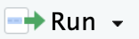

1 + 1[1] 2(-3)^2[1] 9# a line that starts with the # is a comment
# comments do not get executed even if they contain valid code
# 2 + 2
# write a sum of your own.
# run the code and make sure you get the answer you're expectingResources
Download this file to accompany this section:
After you save it, double click it and it should open in the Editor pane in RStudio.
One line at a time:
Run button at top-right of editor pane 
Command (or Ctrl) ⌘ Return ⏎ (advances cursor to next line)
Option (or Alt) ⌥ + Return ⏎ (does not advance cursor)
Whole script
Source (runs code, doesn’t show output)
Source with Echo (shows output)
To start getting used to writing and running code, let’s use R as a calculator to do some sums.
In R, a vector is a collection of values of a single type of data. You can make one by using the c() function to collect things together.
R has a fancy assignment operator: <-.1
Start with a letter (A–Z, a–z) or a . (but not . followed by a number)
Contain only letters, numbers, . or _
Many of the things we eventually want to do involve functions. To use a function, type its name, followed by parentheses. Any inputs or other arguments you need to specify go inside the parentheses.
When must you type argument names? Sometimes.
When should you type argument names? Also sometimes.
You can get help with a function (to see what arguments it accepts, for example) by typing a question mark followed by the function name (without parentheses) in your console.
Running the code will bring up the function’s help documentation in RStudio’s Help pane.
You can access individual element of a vector by supplying an index within square brackets. Note that indexing in R starts at 1 (the first element’s index is 1). This differs from many other coding languages which are 0-indexed (the first element’s index is 0).
You can also select elements from a vector using a logical vector of the same length:
That’s not useful by itself, but how might you create a logical vector like that? By testing the vector with some condition! So the condition can be used to pick out the relevant elements directly.
To anticipate a problem we often run into when working with real data, sometimes our data includes missing values. R has a special placeholder for missing values: NA.
df <- data.frame(a = c(1, 2, 3, 4, 5),
b = c(6, 7, 8, 9, 10),
c = c("this", "is", "a", "text", "column"),
d = c(TRUE, FALSE, FALSE, FALSE, TRUE))
str(df)'data.frame': 5 obs. of 4 variables:
$ a: num 1 2 3 4 5
$ b: num 6 7 8 9 10
$ c: chr "this" "is" "a" "text" ...
$ d: logi TRUE FALSE FALSE FALSE TRUE|>